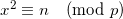

Consider the congruence of the form:

n is a quadradic residue (mod p). What is x? In normal arithmetic, this is equivalent to finding the square root of a number. In modular arithmetic, x is the modular square root of n modulo p.
Now, in the general case, this is a very difficult problem to solve. In fact, it's equivalent to integer factorization, because no efficient algorithm is known to find the modular square root modulo a composite number, and if the modulo is composite it has to be factored first.
But when p is prime, an efficient polynomial algorithm exists for computing x. This is the Tonelli-Shanks algorithm.
Computing modular square roots is probably not one of those things you do daily, but I ran into it while solving a Project Euler problem. So I'm posting the Python implementation of the Tonelli-Shanks algorithm here. It is based on the explanation in the paper "Square roots from 1; 24, 51, 10 to Dan Shanks" by Ezra Brown, as I found the Wikipedia algorithm hard to follow.
The code is tested, and as far as I can tell works correctly and efficiently:
def modular_sqrt(a, p):
""" Find a quadratic residue (mod p) of 'a'. p
must be an odd prime.
Solve the congruence of the form:
x^2 = a (mod p)
And returns x. Note that p - x is also a root.
0 is returned is no square root exists for
these a and p.
The Tonelli-Shanks algorithm is used (except
for some simple cases in which the solution
is known from an identity). This algorithm
runs in polynomial time (unless the
generalized Riemann hypothesis is false).
"""
# Simple cases
#
if legendre_symbol(a, p) != 1:
return 0
elif a == 0:
return 0
elif p == 2:
return 0
elif p % 4 == 3:
return pow(a, (p + 1) / 4, p)
# Partition p-1 to s * 2^e for an odd s (i.e.
# reduce all the powers of 2 from p-1)
#
s = p - 1
e = 0
while s % 2 == 0:
s /= 2
e += 1
# Find some 'n' with a legendre symbol n|p = -1.
# Shouldn't take long.
#
n = 2
while legendre_symbol(n, p) != -1:
n += 1
# Here be dragons!
# Read the paper "Square roots from 1; 24, 51,
# 10 to Dan Shanks" by Ezra Brown for more
# information
#
# x is a guess of the square root that gets better
# with each iteration.
# b is the "fudge factor" - by how much we're off
# with the guess. The invariant x^2 = ab (mod p)
# is maintained throughout the loop.
# g is used for successive powers of n to update
# both a and b
# r is the exponent - decreases with each update
#
x = pow(a, (s + 1) / 2, p)
b = pow(a, s, p)
g = pow(n, s, p)
r = e
while True:
t = b
m = 0
for m in xrange(r):
if t == 1:
break
t = pow(t, 2, p)
if m == 0:
return x
gs = pow(g, 2 ** (r - m - 1), p)
g = (gs * gs) % p
x = (x * gs) % p
b = (b * g) % p
r = m
def legendre_symbol(a, p):
""" Compute the Legendre symbol a|p using
Euler's criterion. p is a prime, a is
relatively prime to p (if p divides
a, then a|p = 0)
Returns 1 if a has a square root modulo
p, -1 otherwise.
"""
ls = pow(a, (p - 1) / 2, p)
return -1 if ls == p - 1 else ls
The full code with some tests is available on GitHub.